Rediseño del sitio web del Fondo de Cultura en Colombia
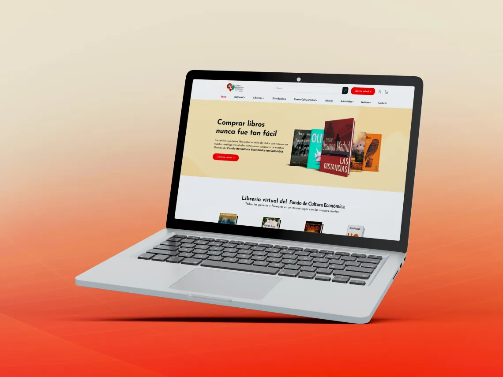
Acerca del Proyecto
El Fondo de Cultura Económica es una de las instituciones editoriales más importantes de Iberoamérica. El reto consistió en transformar su presencia digital en Colombia, pasando de un sitio estático a una plataforma moderna que equilibra su legado intelectual con las exigencias de un e-commerce actual.
Mi Rol y responsabilidades:
Diseñador UX/UI: Responsable de la arquitectura de la información y diseño visual del sitio.
Objetivo del diseño
Modernizar la identidad visual del sitio respetando su sobriedad institucional y optimizar la arquitectura de información para un catálogo extenso.
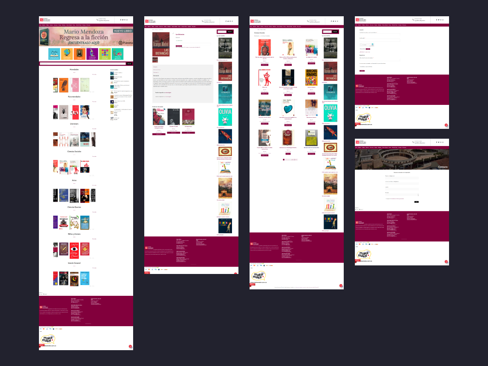
Paso 1: El Punto de Partida (sitio web anterior)
Para entender el problema, analicé la plataforma anterior. Identifiqué que la saturación visual y una arquitectura confusa estaban alejando a los lectores potenciales. Falta de jerarquía en las fichas de libros, navegación poco intuitiva y una estética que no representaba el prestigio de la marca.
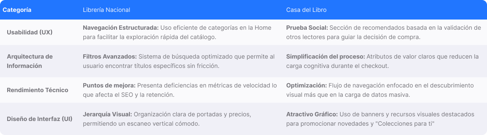
Paso 2: Investigación y Estrategia (Benchmark)
Analicé las mejores prácticas de librerías y competidores locales para definir un nuevo estándar.
Insight: La mayoría de los sitios del sector abruman al usuario con exceso de elementos visuales y poca jerarquía.
Decisión: Opté por un diseño con espacios en blanco generosos, permitiendo que las portadas de los libros fueran las protagonistas y de esa manera facilitar la toma de decisiones de los usuarios.
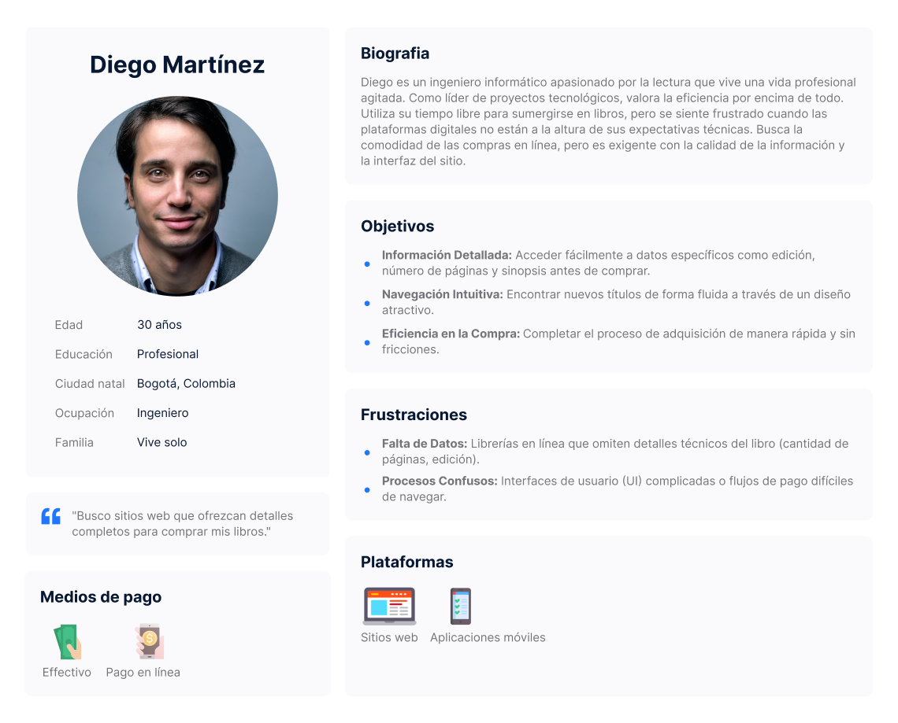
Paso 3: Entendiendo al Usuario (User Persona)
Para que el diseño no fuera solo estético, definí un User Persona basado en el público objetivo de la librería (académicos, estudiantes y lectores).
Perfil: El "Lector Investigador", alguien que busca títulos específicos y valora la rapidez, pero también la información detallada del autor y la editorial.
Necesidad: Encontrar libros difíciles de conseguir de forma rápida y con un proceso de compra sin distracciones. Esta definición guió todas las decisiones de usabilidad posteriores.
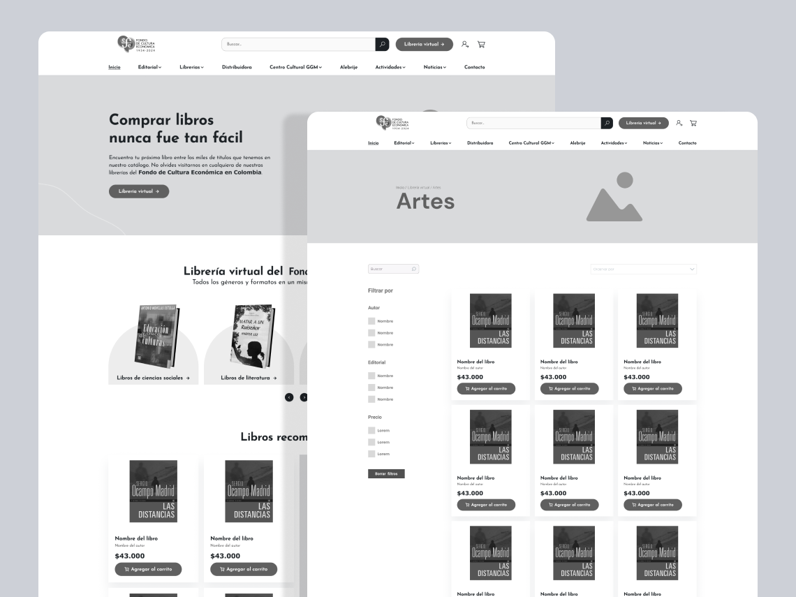
Paso 4: Flujo y Navegación (Sitemap & Wireframes)
Con el perfil de usuario claro, tracé un Sitemap que organiza miles de títulos en categorías accesibles para evitar que el lector se pierda.
• Wireframes: Desarrollé esquemas de baja fidelidad para validar la lógica de navegación y el proceso de compra.
• Iteración: Esta fase fue clave para reducir la cantidad de clics necesarios para llegar al carrito de compras, simplificando la experiencia del usuario.
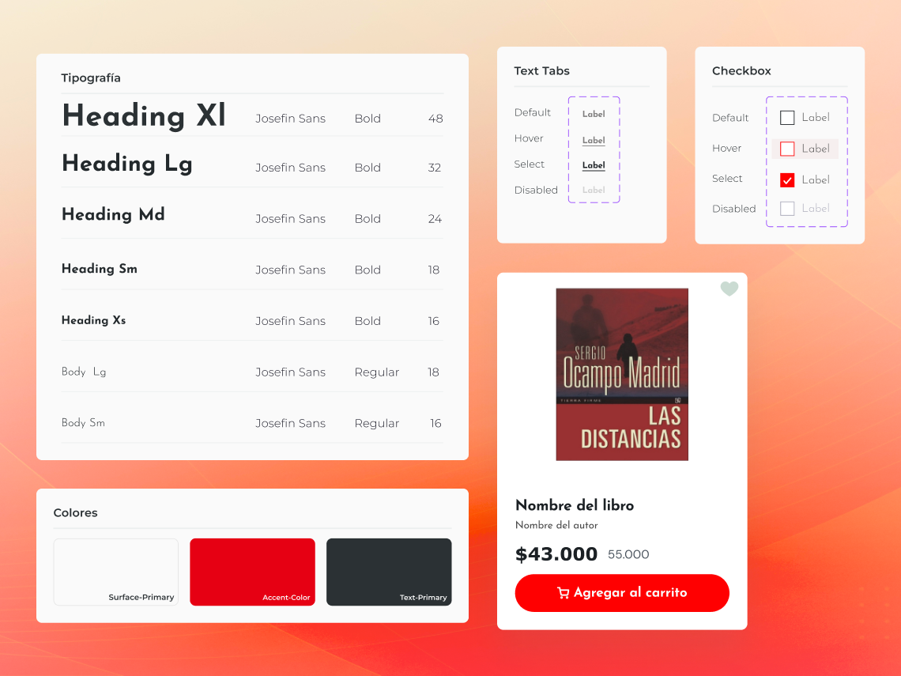
Paso 5: Creación de un UI Kit
Para garantizar escalabilidad y consistencia, construí un sistema de componentes sólido que facilita la transición del diseño al desarrollo:
• Tipografía: Fuentes seleccionadas específicamente para una lectura cómoda y jerarquizada en descripciones extensas de libros.
• Componentes reutilizables: Diseñé botones, cards y menús que permitieron una implementación mucho más rápida y coherente en todas las vistas de la plataforma.
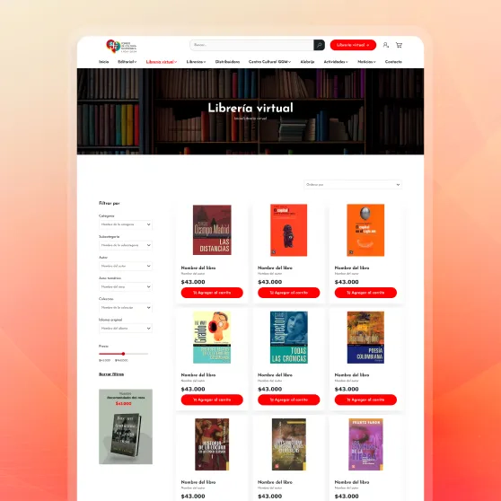
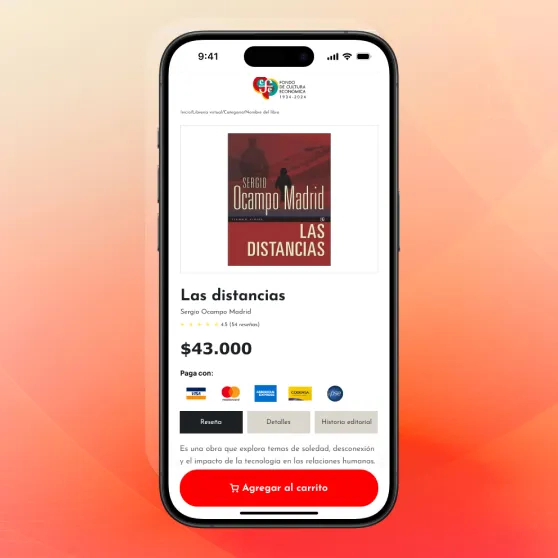
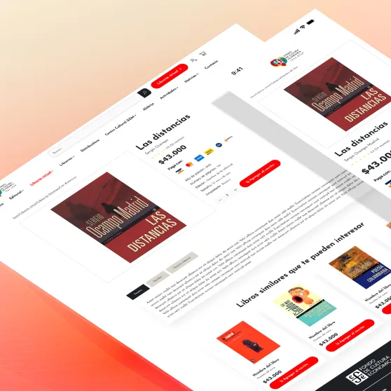
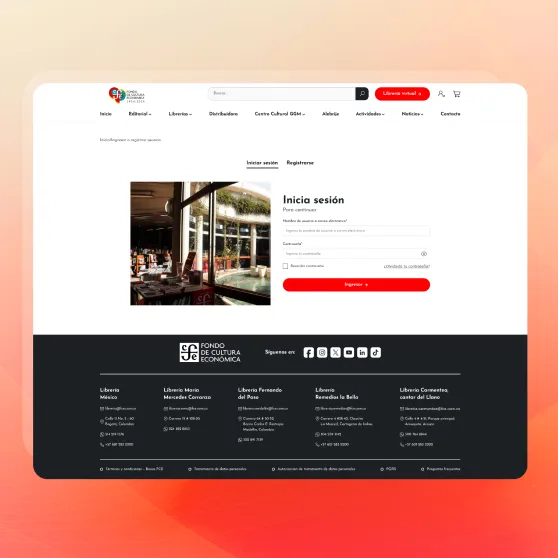
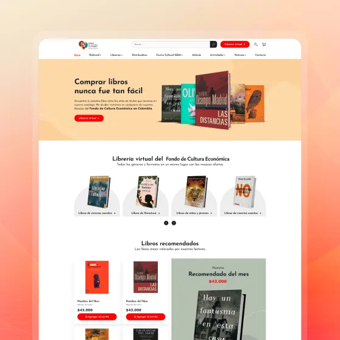
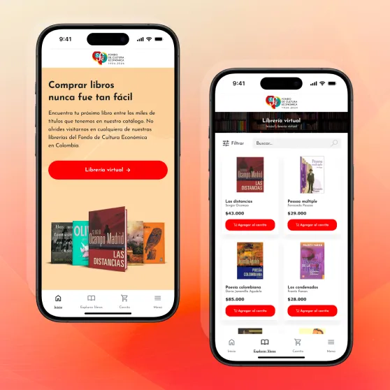
Paso 6: Prototipo de Alta Fidelidad
El resultado final es una plataforma que proyecta confianza y modernidad, alineada con los valores institucionales del Fondo de Cultura Económica.
• Enfoque visual: Una paleta sobria y profesional combinada con una interfaz limpia que garantiza una navegación fluida para el lector.
• Valor técnico: El diseño se creó pensando en la optimización de recursos y la arquitectura SEO. La estructura de componentes y la jerarquía visual facilitaron una implementación técnica eficiente, garantizando que el sitio final fuera rápido y cumpliera con los estándares de Google
Trabajo realizado para AMD Agencia de Marketing Digital